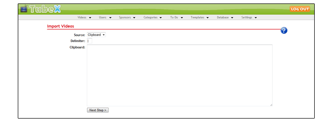

Importing Videos
Finding Sponsors
Many adult sponsors offer hosted videos that you can import using this feature of TubeX. This will quickly give you a large amount of content for your
tube site, and of course you will make money from the sales that you refer! I am maintaining a
list of sponsors that offer hosted videos and will continue to update that list as more are found.
Import Data Format
The import data will need to contain the information for one video per line, and each line should contain delimited text (strings separated by
a unique character). The video information can be in any order, but that order must remain the same throughout the data. Here is an example:
Once you have your video data in the proper format, you can begin the importing process.
Step One - Import Sources
http://www.sponsor-site.com/tubeclips/Just_A_Little_Fun.flv|http://www.sponsor-site.com/tubeclips/Just_A_Little_Fun.jpg|Just A Little Fun starring Mia Bangg|Mia bangg gets fucked in the ass by a huge black cock|Mia Bangg interracial interacial race facial cumshot cum blowjob blacks oral black cock dick white men women girl tits boobs suck fuck sucking dick cock dick licking balls lick tit boob gang fucking group http://www.sponsor-site.com/tubeclips/Working_It_Black.flv|http://www.sponsor-site.com/tubeclips//Working_It_Black.jpg|Working It Black starring Chelsie Rae|Chelsie rae sucks and fucks a big black dick|Chelsie Rae interracial interacial race facial cumshot cum blowjob blacks oral black cock dick white men women girl tits boobs suck fuck sucking dick cock dick licking balls lick tit boob gang fucking group http://www.sponsor-site.com/tubeclips/Cytheria_Blacked.flv|http://www.sponsor-site.com/tubeclips/Cytheria_Blacked.jpg|Cytheria Blacked starring Cytheria|Cytheria gets fucked by a big black dick at the pool|Cytheria interracial interacial race facial cumshot cum blowjob blacks oral black cock dick white men women girl tits boobs suck fuck sucking dick cock dick licking balls lick tit boob gang fucking group http://www.sponsor-site.com/tubeclips/Tia_Works_It.flv|http://www.sponsor-site.com/tubeclips/Tia_Works_It.jpg|Tia Works It starring Tia Sweets|Tia sweets rides a big black cock|Tia Sweets interracial interacial race facial cumshot cum blowjob blacks oral black cock dick white men women girl tits boobs suck fuck sucking dick cock dick licking balls lick tit boob gang fucking groupThe above example has four videos each with the URL to the video file, the URL to the thumbnail preview, the video title, the video description, and the video tags. This particular example uses the pipe character (|) as the delimiter, but that is not required. The delimiter can be any unique character that is only used to delimit the fields in the data and does not appear in any other parts of the data.
Once you have your video data in the proper format, you can begin the importing process.
To start the import process, access the Videos > Import Videos function from the control panel menu. This will load a page where you will select the import source, which will
look like this:
Step Two - Configuring Import Settings

-
Source -
Select the source for the import data. Possibilities are:
Clipboard
This option will allow you to paste the import data from your clipboard into a large text input field
Upload
This option will allow you to select and upload a text file containing the import data
URL
This option will allow you to enter the URL to a text file containing the import data
Delimiter - Enter the character (or characters) that is used in the data to delimit the video information on each line
Clipboard - This will only appear when source is set to Clipboard. You can paste the import data into this field.
File - This will only appear when source is set to Upload. Select the file from your computer that contains the import data.
URL - This will only appear when source is set to URL. Enter the full HTTP URL to the location of the text file that contains the import data.
TubeX will process the source that you provided, and then provide an analysis of the data. On this page you will be able to tell TubeX what each field in the import data
should be assigned to for each video that is added. The interface will look like this:

Importing
Define the Data Format
This section will show you the first line of the import data, split up based on the delimiter and displayed so you can assign the appropriate type to each piece of data.
Use the drop down selection fields to assign the correct type for each field. Each type is described below.
-
Title - The video title
Description - The video description
Tags - The video tags. This can be comma or space separated
Category - The video category. If a category is not included in the import data or the category provided does not match one of your existing categories, the Automatic Categorization feature will be used. If Automatic Categorization fails, the category selected in the Default Settings will be used.
Embed Code - The complete embed code for the video
Gallery URL - The full HTTP URL that points to a TGP movie gallery. The videos and thumbnails will be extracted from the gallery for use on your tube site. Videos will be hotlinked, while thumbnails will be downloaded for local storage.
Video URL - The full HTTP URL that points directly to the video file
Base Video URL - The full HTTP URL that points to the directory in which the video files are located. This must be used in conjunction with the Video Filename type.
Video Filename - The filename(s) of the video file(s). This can either be a single filename, or a comma separated list of filenames.
Thumbnail URL - The full HTTP URL that points directly to the video preview image
Base Thumbnail URL - The full HTTP URL that points to the directory in which the thumbnail files are located. This must be used in conjunction with the Thumbnail Filename type.
Thumbnail Filename - The filename(s) of the thumbnail image(s). This can either be a single filename, or a comma separated list of filenames.
Duration (in seconds) - The duration of the video, in seconds
Duration (HH:MM:SS) - The duration of the video formatted as HH:MM:SS
Default Settings
This section will allow you to configure the settings that will be used for each video that is imported into the database.
-
Sponsor - All videos imported will be assigned this sponsor.
Category - The default category to use for imported videos. Videos which cannot be categorized using the Automatic Categorization feature will be assigned to this category.
Username - The username to set for all imported videos
Status - The status to set for all imported videos
Comments Allowed - Indicates if comments are allowed for the imported videos
Allow ratings - Indicates if ratings are allowed for the imported videos
Allow embedding - Indicates if the imported videos can be embedded in remote sites
Make private - Set imported videos as private
Import Settings
This section will allow you to configure some additional import settings.
-
Queue for conversion - Check this box to have the imported videos added to the conversion queue. The conversion queue will download the video file(s), convert
them into the format you have specified in the Global Settings interface, and the converted videos will be hosted from your server. Videos that
are queued for conversion will not appear on your site until they have been converted.
Queue for thumbnail generation - Check this box to have the imported videos added to the thumbnail generation queue. Thumbnail generation will download the video file(s) from the remote server and generate preview thumbnails from them. The video files will be deleted after the thumbnails have been generated and the videos shown on your site will still be hotlinked from the URL provided during the import process.
Once you have configured the data format and default settings, press the Import Videos button. This will start the import process and will display a progress bar letting you
know how much of the import process has been completed. Importing can take anywhere from a few seconds to several minutes, depending on how many videos are included in the import
data. After all of the import data has been processed, a notification message will let you know how many videos were imported.